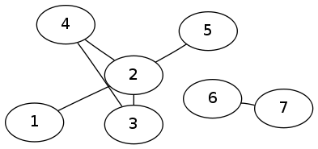
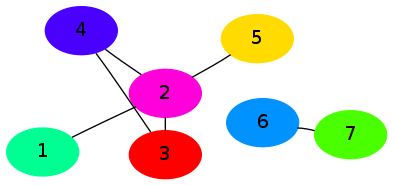
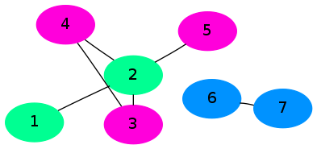
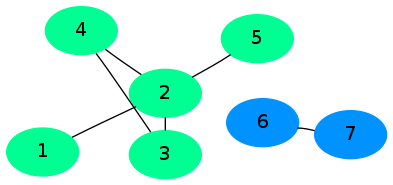

requires graph in memory, not parallel
consider the simple graph 
bulk synchronous parallel approach simple ruby version
|  |  |  |
| initial state | in progress | stable |
$ # generate above graphs $ ./simple_bsp.rb < graph.tsv
start with a relation that has node_id, a connected_component_id and a list of neighbours seed the connected_component_id with the node_id
id cc_id neighbours 1 1 2 2 2 1 3 4 5 3 3 2 4 4 4 2 3 5 5 2 6 6 7 7 7 6
map pass emits two types of record...
3 3 2 4emits
3 3 2 4 # re emit current record 2 3 # send neighbour 2 our cc_id of 3 4 3 # send neighbour 4 our cc_id of 3
the reduce step collects the neighbours info and the minimum of the connected_component_ids
eg the reduce step for node 3 would receive the records...
3 4 # the cc_id of 4 sent to us from node 4 3 3 2 4 # the original record sent from ourselves (node 3) 3 2 # the cc_id of 2 sent to us from node 2picking the minimum cc_id of [4,3,2], as well as recording the neighbours (when we saw them on the 2nd record), we can reduce these 3 records to
3 2 2 4
for the entire relation then we start with
id cc_id neighbours 1 1 2 2 2 1 3 4 5 3 3 2 4 4 4 2 3 5 5 2 6 6 7 7 7 6and after one map/reduce pass we get...
id cc_id neighbours 1 1 2 2 1 1 3 4 5 3 2 2 4 4 2 2 3 5 2 2 6 6 7 7 6 6after another map/reduce pass we get...
id cc_id neighbours 1 1 2 2 1 1 3 4 5 3 1 2 4 4 1 2 3 5 1 2 6 6 7 7 6 6and we've now converged on the end result (ie nothing changes with another iteration)